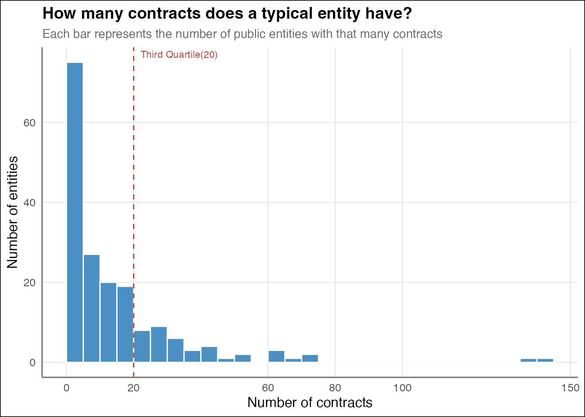
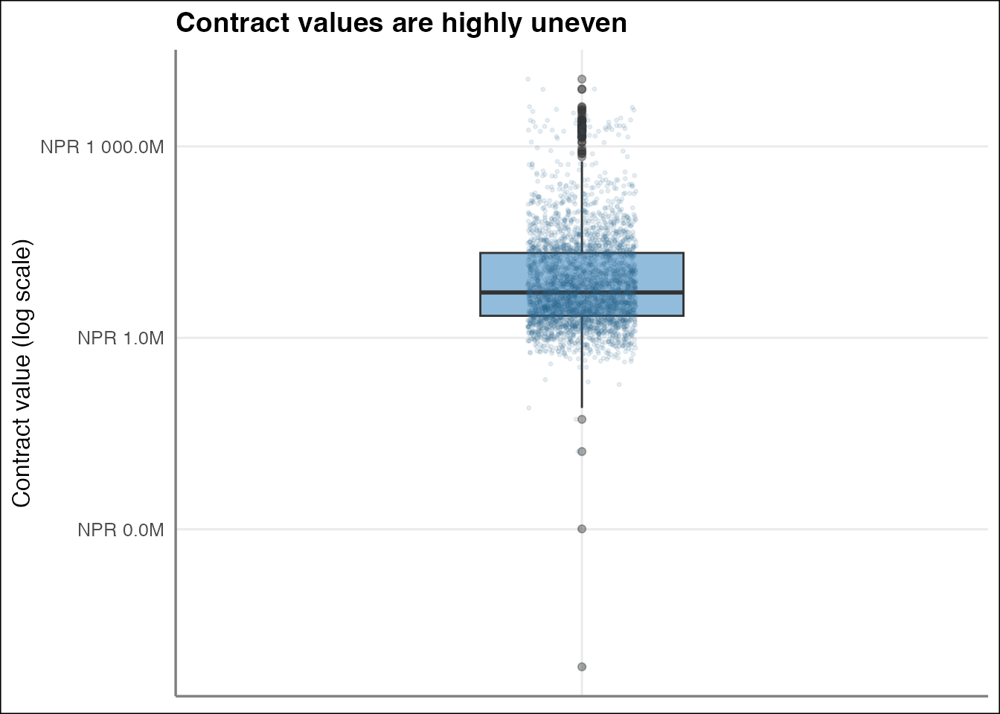
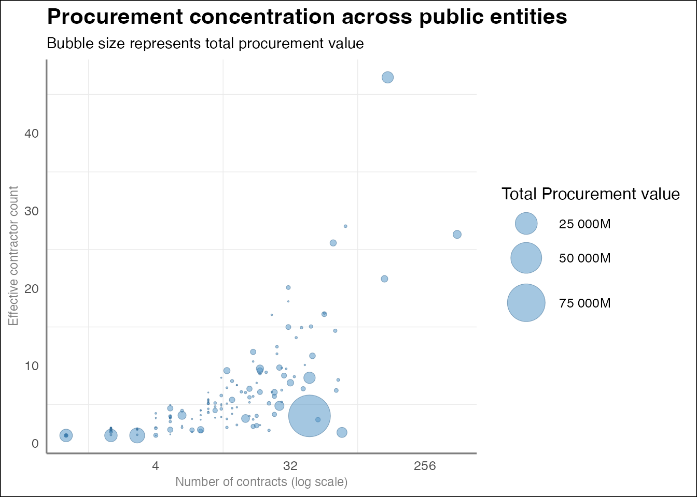
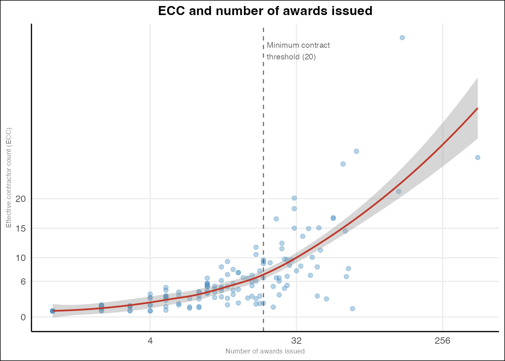
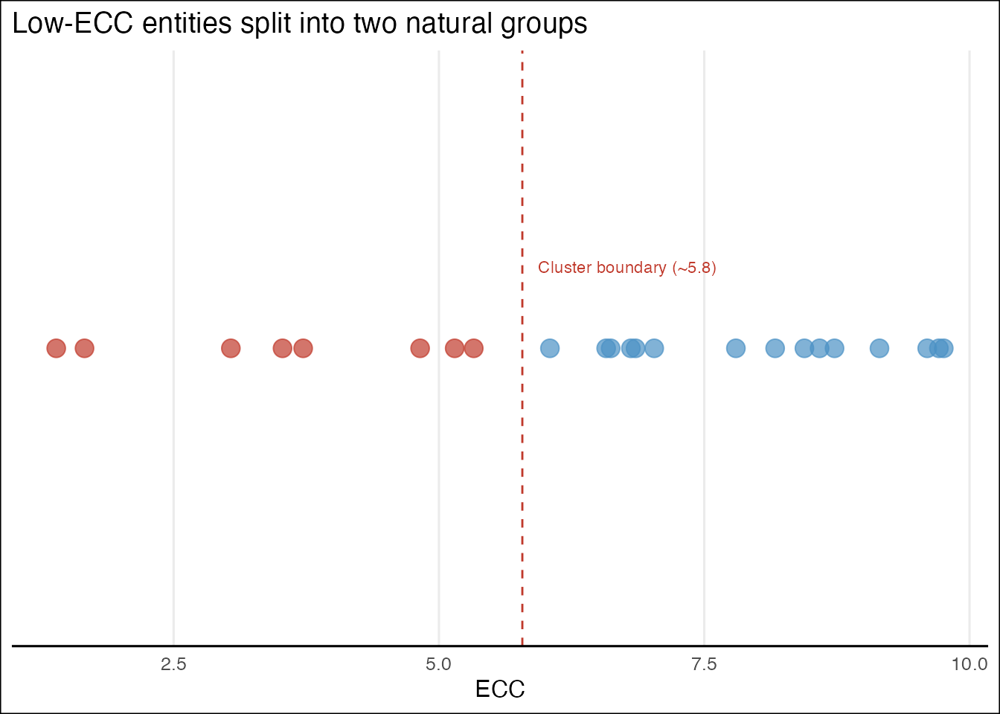
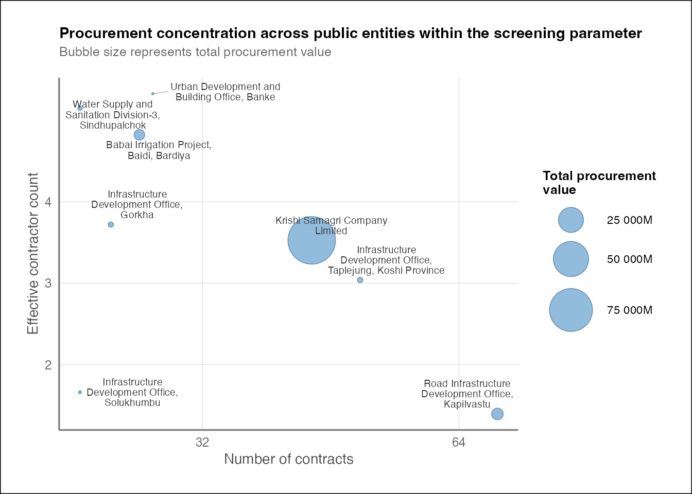

| Procurement dataset at a glance | |
| Metric | Value |
|---|---|
| Public entities | 183 |
| Total contracts | 3,173 |
| Unique contractors | 2,380 |
| Total value (NPR) | ₹206,160,848,718 |
| Procurement methods observed | 5 |
The design of competitive public procurement works when many qualified suppliers compete for government contracts. When a small number of contractors win most of the value at a given public entity, such concentration is worth a closer look; among other things it can signal a genuinely thin supplier market, or it can signal something narrower such as specification, timelines, or processes that quietly favour a few suppliers.
This brief attempts to make use of one screening method, the the Effective Contractor Count (ECC) derived from the Herfindahl-Hirschman Index, to systematically identify public entities participating in Nepal’s e-Government Procurement (e-GP) system that show unusually concentrated contractor bases, using award data from April 26, 2013 to July 30, 2026. The goal of the exercise is not to diagnose potential corruption or any wrong doing but to make a case for a method to identify and shortlist cases where concentration is high enough, and unexplained, to justify further oversight and scrutiny by concerned authorities.
Understanding the Data
There are a total of 3,173 unique awards during this period that ran through e-GP (bolpatra system in Nepal) from a total of 183 different public entities. Of these 3175 awards, total of 2382 unique contractors were involved which amounts to total of 206,161 million worth of service and/or goods procured.
Data was scraped from Nepal’s e-Government Procurement (e-GP / Bolpatra) system’s public contract records page (https://bolpatra.gov.np/egp/loadContractRecordsListPublic).
| Descriptive statistics of award count | |
| (values in number of awards) | |
| Total Public Entity | 183.0 |
| Total Awards | 3,173.0 |
| Minimum no of Awards | 1.0 |
| First Quartile (25th percentile) | 2.0 |
| Median number of Award | 9.0 |
| Third Quartile (75th percentile) | 20.0 |
| 90th Percentile | 37.4 |
| 99th Percentile | 138.3 |
| Maximum number of Award | 421.0 |
| Max-to-Median Ratio | 46.8 |
| Top 1%-to-Median Ratio | 15.4 |
| Descriptive statistics of award values | |
| (in million) | |
| Total Awards | 3,173.00 |
| Minimum Award Value | 0.00 |
| First Quartile (25th percentile) | 2.21 |
| Median Award Value | 5.14 |
| Third Quartile (75th percentile) | 21.41 |
| 90th Percentile | 62.69 |
| 99th Percentile | 1,856.31 |
| Maximum Award Value | 11,317.06 |
| Max-to-Median Ratio | 2,201.46 |
| Top 1%-to-Median Ratio | 361.10 |
On awards counts per entity. As illustrated in the Table 2 the median entity in this dataset issued just 9 awards. A quarter of entities issued 2 or fewer, and three quarters issued 20 or fewer. At the other end, a handful of entities are far more active. The busiest single entity issued total of 421 awards which is over 46 times the median and the top 1% of entites issued 138 or more.
What this means is an entity with only 2 or 3 contracts can look fully concentrated simply because there isn’t enough activity to spread across multiple contractors and not because anything unusual is happening. Before measuring contractor concentration, this brief therefore restricts its screening to entities with a meaningful volume of activity.
On contract values. Spending is even more skewed than activity as illustrated in Table 3. The median award is worth NPR 5.14 million, but a quarter of awards exceed 21.4 million, and top 1% are worth NPR 1,856 million or more which is at least 360 times the median. The single largest recorded award is worth NPR 11,317, which is approximately 2200 times the median award.
Both Table 2 and Table 3 points to the same direction that a small number of entities account for disproportionate share of activity, and a small number of awards account for a disproportionate share of spending. Similar, is illustrated by Figure 1 and Figure 2. Measuring contractor concentration by counting awards alone would treat a contractor who won (say) ten awards the same as the one who won a single NPR 1000 million project. This is why for the purpose of this exercise the concentration is measured by award values, using the Herfindahl-Hirschman Index, rather than by number of contracts won.


Measuring Contractor Concentration: The HHI
To measure how concentrated a public entity’s contractor base is, this exercise uses the Herfindahl-Hirschman Index (HHI), a standard tool that regulators around the globe use to assess market concentration. HHI is calculated by taking each contractor’s share of any entity’s total contract value, squaring it, and summing across all contractors. The result ranges from near-zero (spending by the entity spread evenly across many contractors) to 10,000 (a single contractor captures everything).
HHI score, ranging from near-zero to 10,000, is not intuitive enough and for this reason, this exercise converts it into the Effective Contractor Count (ECC). ECC is the number of equally-sized contractors that would produce the same HHI score. So, ECC value of 8 would mean that an entity’s spending is about as concentrated as if it were split evenly among 8 contractors, even if, on paper, twenty contractors won at least one contract in that particular entity. This makes concentration comparable across entities of very different sizes, and easier to reason about than an abstract index score. ECC is calculated as the inverse of the HHI (the sum of each contractor’s squared value share at each public entity).
It is to be noted that ECC should be read as a screening indicator and not a verdict of any wrongdoing. A low ECC could genuinely reflect a thin supplier market because of nature of the market or works or services rather than any irregularity in how contracts were awarded. This exercise treats a low ECC as the start of a question, and not the end of one.
The ECC across Public Entities
Figure 3 below plots each public entity’s effective contractor count (ECC) against its number of contracts (in log scale), with bubble size showing total procurement value. A clear general pattern emerges in the plot; the entities with more awards tend to also have higher ECC, which, makes intuitive sense as more transactions create more opportunities for different contractors to win work. However, this otherwise linear relationship doesn’t always hold which is worth noting.
The entities that depart from the general pattern at higher contract volumes are of interest. One entity in particular in the plot stands out which accounts for the largest bubble on the chart yet sits at a comparatively modest ECC given the number of awards it has issued. In other words, its spending is concentrated among relatively few contractors despite substantial transaction volume and total value, which is a very different scenario from an entity with few contracts and low ECC simply because it hasn’t transacted enough for competition to emerge.
By contrast, some entities with moderate-to-high contract counts show notably higher ECC than others, at similar volumes indicating, comparatively broad-based competition for entities of similar size and activity.

The threshold for screening
On minimum contract threshold. Public Entities with few awards issued almost always show low ECC, whether or not real concentration is an issue. There is simply not enough activity to tell the difference. Figure 4 shows this pattern holds roughly around the 20 contracts point which also happens to be the third quartile (see Table 2) of the public entity in this dataset. This exercise, therefore, limits its screening (for contractor concentration) to the public entities with at least 20 awards issued, which accounts for 25% of total entities in the dataset.

On maximum ECC threshold. A two cluster split (k-means) was applied to the entities with sufficient award history (ie total award count above 20). Figure 5 shows the result, a clear boundary emerges around ECC approximately at 5.8, splitting entities with a boundary landing in a visibly empty stretch of the distribution, rather than cutting through a cluster. It is therefore this exercise adopts ECC < 5.5 as its screening threshold.
A combination of minimum of total awards at 20 and maximum of ECC at 5.5 identifies 8 entities for closer examination.

Public Entities Within the Screening Parameters
The 8 public entitites within the set screening parameter (ie ECC less than 5.5 and total awards issued at least 20) are:
- Road Infrastructure Development Office, Kapilvastu
- Infrastructure Development Office, Solukhumbu
- Infrastructure Development Office, Taplejung, Koshi Province
- Krishi Samagri Company Limited
- Infrastructure Development Office, Gorkha
- Babai Irrigation Project, Baidi, Bardiya
- Water Supply and Sanitation Division-3, Sindhupalchok
- Urban Development and Building Office, Banke

Figure 6 shows 8 of the flagged entities together, with bubble size indicating total procurement value at each of the entities. In terms of the total procurement portfolio, they are not uniform group. For instance Krishi Samagri Company Limited, a government entity that is tasked with procuring agricultural goods, stands out with by far the largest procurement volume among the flagged entities.
Likewise, the Road Infrastructure Development Office, Kapilvastu presents a different pattern. It has the highest number of award issued among the 8 entites that are under the screening parameter, however, its ECC remains the lowest in the group, indicating that a high volume of transactions has not translated into a broader contractor base.
Let’s look into Krishi Samagri Company Limited
Krishi Samagri Company Limited has highest total contract value among all the public entities. It has issued total of 43 awards distributed among 5 contractors. Following are the name of the awards with highest (top 5) contract value:
- Supply And Delivery Of 30,000(±2%) MT Chemical Fertilizer (DAP) 18-46-0
- Supply And Delivery Of 30,000(±2%) MT Chemical Fertilizer (DAP) 18-46-0
- Supply And Delivery Of 30,000(±2%) MT Chemical Fertilizer (DAP 18-46-0)
- Supply And Delivery Of 30,000(±2%) MT Chemical Fertilizer (DAP 18-46-0)
- Supply And Delivery Of 30,000(±2%) MT Chemical Fertilizer (UREA) 46-0-0
From the above, we can see that contracts are mostly fertilizer procurement. The contractors for the Krishi Samagri Company Limited are as follows:
- m/s sun international fze
- m/s indian potash limited
- m/s aditya birla global trading(singapore) pte ltd
- m/s swiss singapore overseas enterprises pte ltd
- m/s commodity first dmcc
From above, we can clearly see that the contractors for Krishi Samagri Company Limited are foreign companies, which makes sense, as Nepal does not have facilities for production of chemical fertilizer.
Krishi Samagri Company Limited is the sole public entity in this dataset procuring chemical fertilizer, meaning there is no comparable entity against which to benchmark whether its five contractors represent a “normal” or unusually narrow supplier base for this category. Nepal appears to concentrate all fertilizer procurement in a single entity. This in itself may be worth pondering.
Whether five contractors constitutes a genuinely competitive slate of the qualified international suppliers for bulk fertilizer imports cannot be determined from award data alone. This is precisely the kind of question planning and tender-stage data could help answer, and is flagged here as a direction for further oversight.
A Snapshot of the 8 Entities
| Entities flagged for closer review | |||||
| Ranked by total procurement value across all public entities | |||||
| Rank | Public Entity | Contracts | Total Value | Contractors | ECC |
|---|---|---|---|---|---|
| 1 | Krishi Samagri Company Limited | 43 | ₹92,200.8M | 5 | 3.53 |
| 7 | Road Infrastructure Development Office, Kapilvastu | 71 | ₹4,953.0M | 53 | 1.39 |
| 8 | Babai Irrigation Project, Baidi, Bardiya | 27 | ₹4,055.7M | 19 | 4.82 |
| 31 | Infrastructure Development Office, Taplejung, Koshi Province | 49 | ₹931.3M | 27 | 3.04 |
| 35 | Infrastructure Development Office, Gorkha | 25 | ₹847.3M | 23 | 3.72 |
| 43 | Water Supply and Sanitation Division-3, Sindhupalchok | 23 | ₹576.7M | 18 | 5.15 |
| 68 | Infrastructure Development Office, Solukhumbu | 23 | ₹233.5M | 15 | 1.66 |
| 94 | Urban Development and Building Office, Banke | 28 | ₹110.2M | 24 | 5.33 |
| Rank reflects position by total procurement value among all 183 public entities in the dataset. | |||||
Table 4 presents eight entities together. They are not uniform in what they represent. Krishi Samagri Company Limited carries by far the largest procurement value (not just among the group but among all public entities in the entire dataset). It is to be noted that it is nearly 20 times the next highest entity in the group making it the single most consequential case in terms of public money used.
Road Infrastructure Development Office, Kapilvastu is the most striking case in the table. Despite total of 53 contracts awarded, which is more than any in the group, its ECC is the second lowest at 1.39, indicating that a small handful of these 53 contractors are involved in majority of the entire procurement portfolio. This is materially different pattern from that of Krishi Samagri Company Limited, where few contractors exist in absolute sense. Here, many contractors nominally participate, effective competition is still extremely low.
Likewise, Infrastructure Development Office, Solukhumbu shows the second lowest ECC in the group (1.66) and that on a comparatively small procurement base, while Water Supply and Sanitation Division-3, Sindhupalchok, Babai Irrigation Project, Baidi, Bardiya, and Urban Development and Building Office, Banke sit closest to the screening threshold and represent more moderate, borderline cases of concentration.
ECC and the Table 4 tells how concentrated an entity’s procurement portfolio is, but not what that concentration looks like on the ground. Table 5 shows the actual leading contractors behind each entity’s low score
| Top contractor concentration | ||||
| Selected procurement ranks and the contractors capturing the largest contract volumes | ||||
| Contractor | Contract value | Method | Category | Share of entity volume |
|---|---|---|---|---|
| Road Infrastructure Development Office, Kapilvastu | ||||
| shree mukthinath nirman sewa | ₹4,191,177,042 | NCB | Works | 84.6% |
| asiatic-rijal jv | ₹97,799,327 | NCB | Works | 2.0% |
| Babai Irrigation Project, Baidi, Bardiya | ||||
| lumbini-arghakhanchi-bhairab jv | ₹1,524,635,503 | NCB | Works | 37.6% |
| swachchhanda nirman sewa pvt ltd | ₹946,940,205 | NCB | Works | 23.3% |
| bayan-n s t jv | ₹136,307,127 | NCB | Works | 3.4% |
| bayan-premraaj jv | ₹135,576,000 | NCB | Works | 3.3% |
| ns-premraaj jv | ₹133,541,129 | NCB | Works | 3.3% |
| Infrastructure Development Office, Taplejung, Koshi Province | ||||
| m/s lumbini-gajurmukhi jv | ₹466,977,572 | NCB | Works | 50.1% |
| m/s himalayn construction | ₹231,770,396 | NCB | Works | 24.9% |
| sanjeev nirman sewa pvt ltd | ₹81,882,294 | NCB | Works | 8.8% |
| Infrastructure Development Office, Gorkha | ||||
| lama construction company pvt ltd | ₹386,740,872 | NCB | Works | 45.6% |
| elite construction co pvt ltd | ₹156,083,249 | NCB | Works | 18.4% |
| baniya nirman sewa pvt ltd | ₹98,070,562 | NCB | Works | 11.6% |
| kalpabrichhya builders pvt ltd | ₹48,895,738 | NCB | Works | 5.8% |
| Infrastructure Development Office, Solukhumbu | ||||
| ramsagar/b k s k jv | ₹180,260,973 | NCB | Works | 77.2% |
| jalap nepal (p) ltd | ₹8,582,985 | NCB | Goods | 3.7% |
| Urban Development and Building Office, Banke | ||||
| tdr-jugal j/v, koteshwor kathmandu | ₹45,217,839 | NCB | Works | 41.0% |
| mahima construction | ₹6,732,840 | NCB | Works | 6.1% |
| tilak nirman sewa | ₹3,987,280 | NCB | Works | 3.6% |
| shiva construction | ₹3,855,704 | NCB | Works | 3.5% |
| om nirman sewa | ₹2,989,311 | NCB | Works | 2.7% |
At contractor-level detail the “low ECC” describes different situations across the public entities.
At one extreme, Road Infrastructure Development Office Kapilvastu engaged with 53 contractors in total, yet a single firm, Shree Muktinath Nirman Sewa captured 84.6% of total procurement volue, while the next-largest contractor received just 2% of the share. It would be interesting to note how the procurement was planned. This could also be a possible management-related risk flag for the entity, as in how and why is one single contract is designed in manner that constitutes 84% of its total procurement amount. It is to be noted that Infrastructure Development Office, Solukhumbu exhibits a comparable pattern at a smaller scale (77.2% worth contract to single contractor through single contract). It would noteworthy to look deeper in such pattern among various Infrastructure Development office.
All these awards presented above in Table 5 followed a National Competitive Bidding as a procurement method and nearly all fall under the “Works” (construction/infrastructure) category. This means the sharp variation in outcomes from Kapilvastu’s near-total dominance by one firm to Gorkha’s more distributed pattern cannot be explained by differences in procurement method or broad category of procurement. It points instead towards other entity-level factors such as planning, design and structure of the award within the NCB process itself. And such cannot be fully explained by award level data alone.
Recommendations
This screening exercise was designed to narrow 183 public entities down to a small number of cases warranting closer attention. This by no means is an attempt to diagnose corruption or irregularity or any wrongdoing, which award-level data alone cannot establish. The exercise has led to three directions worth noting:
Prioritize entity-level review, starting with the evident cases. Road Infrastructure Development Office, Kapilvastu and Infrastructure Development Office, Solukhumbu stand out even within the flagged group. Both show a pattern where a single contractor seems to have secured over three-quarters of total contract value, despite (in Kapilvastu’s case) a large nominal pool of 53 contractors. Oversight bodies who are often plagued with limited audit capacity could use this kind of screening method to prioritize which entities to examine first, rather than reviewing entities at random or by size alone.
Identifying a process-level concentration before intervening. Not all public entities with low ECC value calls for same response. For example Krishi Samagri Company Limited’s concentration is plausibly explained by the nature of goods procured ie fertilizer through foreign companies. It is fundamentally different from the concentration observed in case of Kapilvastu. Hence, no same fix would apply to both. For example, unbundling contracts to attract more bidders and more contractors would likely help in Kapilvasut’s case but would do little to nothing for Krishi Samagri Company Limited. Any remedial response should be matched to the patterns each public entities actually exhibit.
Limits of award-level data. Every awards observed and analysed in this exercise was procured through NCB, yet the outcomes ranged from near-total single contractor dominated scenario to more distributed competition. Hence, the dataset clearly has its limitation. A bidding-stage data would substantially improve any screening exercise like this.